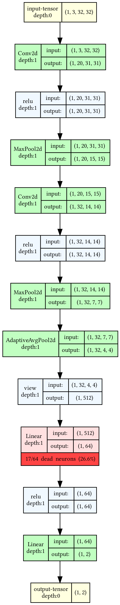
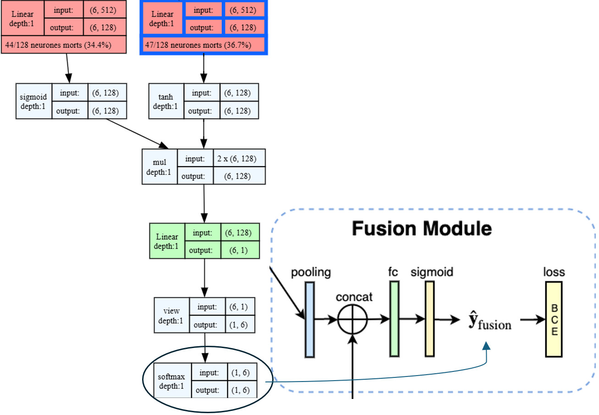

Convolutional neural networks are heavily over-parameterized: the number of trainable weights routinely exceeds the number of training samples, which gives them a strong tendency to memorize rather than generalize on supervised tasks such as classification. The usual remedy is data. For the empirical risk minimizer (ERM) to generalize — that is, for its true risk under the underlying distribution P to stay close to the empirical risk it was trained to minimize — one draws a training set from P large enough for the two to coincide. In medical imaging that remedy is often out of reach: ground-truth labels require expert annotation and, for endpoints such as biopsy-confirmed malignancy, are both expensive and technically difficult to obtain.
When the sample size cannot be increased, the alternative is to reduce the number of parameters to what the task actually requires — parsimony instead of more data. Identifying the parts of a CNN that play no role in the task, in the sense that their ReLU output never leaves zero, is one concrete route: those branches carry weights that are trained but never used, and could in principle be removed. Such units are the signature of the dying ReLU problem, and they cost more than wasted capacity — a unit whose pre-activation is negative for every input receives no gradient, so it cannot recover on its own, and the network's effective learning capacity shrinks accordingly. Several recent studies analyze the phenomenon and propose ways to mitigate it or to bring the affected units back to life.
Work on the dying ReLU falls into three broad families, following the taxonomy proposed by Lu et al. (2020). The first modifies the architecture, and in particular the activation function: leaky ReLU (Maas et al., 2013), ELU (Clevert et al., 2016), SELU (Klambauer et al., 2017) and searched activations (Ramachandran et al., 2017) all preserve some gradient signal on the negative side, although their relative benefit varies across tasks and datasets, and each adds at least one hyper-parameter to tune. The second inserts extra operations into the training loop — batch normalization (Ioffe and Szegedy, 2015), dropout (Srivastava et al., 2014) — at the cost of additional computation per iteration. The third leaves both the architecture and the training procedure untouched and changes only how weights and biases are initialized (Glorot and Bengio, 2010; Saxe et al., 2014; He et al., 2015; Mishkin and Matas, 2016).
Lu et al. (2020) give the first theoretical treatment of the problem in this third setting. They prove that under the symmetric, zero-centered distributions used by essentially all standard schemes, the probability that a ReLU network is born dead — already a constant function at initialization, and therefore beyond rescue by any gradient-based optimizer — converges to one as depth grows, while at fixed depth it vanishes as width grows. Death is thus a property of the architecture as much as of the initializer, which explains both why deep narrow networks are hard to train and why the wide networks used in practice rarely collapse outright. Their proposed randomized asymmetric initialization (RAI) draws a single, randomly chosen entry of each weight-and-bias row from a positive, asymmetric distribution and the remaining entries from a centered Gaussian, with the parameters fixed by a second-moment analysis so as not to trade the dying ReLU for exploding activations; the resulting born-dead probability is substantially lower than under He initialization. Shin and Karniadakis (2020) move from whole-network death to the number of dead units, distinguish tentative from permanent death, and tie trainability — the probability that training succeeds at all — to how many units are permanently dead at initialization, which motivates a data-dependent initialization. More recent work intervenes during training rather than before it: Cai et al. (2021) route the negative phase through a parallel trainable branch instead of discarding it, reconstructing units that a plain ReLU would have killed, while Horuz et al. (2025) apply surrogate gradients to inactive ReLU units (SUGAR) so that they keep receiving updates — a plug-in regularizer that leaves the architecture unchanged.
What all of these approaches presuppose is that one already knows where in the network the problem is. The closest existing measure is the average percentage of zeros (APoZ) of Hu et al. (2016), which ranks neurons by how often their post-ReLU output is zero over a validation set in order to prune the weakest ones; a dead unit in our sense is its limiting case, an APoZ of 100%. What is missing is not the statistic but the map: to the best of our knowledge, no simple tool exists for visualizing which parts of an architecture never activate across a full pass over an empirical dataset — for seeing where the dying ReLU actually occurs in a specific network, and how much of it is affected. That is our contribution.
Our contributionsTo analyze the internal behavior of a network, data is propagated through the model. Forward hooks then retrieve the activations of the layers under study. These are screened for neurons that produce no positive activation across the observed examples, and the result is mapped onto a visual representation of the architecture.
Step 3 above is the core of the method: a neuron that never produces a positive activation across the dataset is what we call a dead neuron. We now state this criterion formally.
Let \(a_i^{(k)}(x)\) denote the post-ReLU activation of neuron \(i\) in layer \(k\) for an input image \(x \in \mathcal{D}\). A neuron is considered dead if its activation remains non-positive for every image in the dataset. We define the dead-neuron indicator as:
\[ d_i^{(k)} = \mathbf{1}\!\left( \forall x \in \mathcal{D}, \; a_i^{(k)}(x)\le 0 \right) \]
where \(\mathbf{1}(\cdot)\) denotes the indicator function.
As an initial validation of the proposed visualization pipeline, we applied our method to a lightweight convolutional neural network (SmallCNN). The architecture consists of two convolutional layers, each followed by a ReLU activation function and a max-pooling operation, and two fully connected layers, the first of which is likewise followed by a ReLU activation. The network was trained on a binary classification task derived from the CIFAR-10 dataset (cat vs. dog) for 10 epochs using a learning rate of 1 × 10−4. The best-performing checkpoint, achieving a test accuracy close to 70%, was selected for all subsequent visualization experiments. The resulting architecture is illustrated below.

Observation: dead neurons are rare overall — XXXX of the network's 25,558 units (19,220 + 6,272 + 64 + 2), i.e. ≈0.07% — and confined to a single layer: only 1 of the 4 weighted layers (2 Conv2d + 2 Linear) is affected. None were found in the convolutional layers, and none in the final FC layer — the latter is expected of a trained classifier, since a dead unit there would make the output constant in binary classification. Every dead unit lies in fc1, the penultimate layer, where 17 of 64 neurons (26.6%) never activate. This first case already shows that dead units are not evenly distributed across a network — a question we now examine at a much larger scale with GMIC.
Following the validation of the visualization pipeline on SmallCNN, the method was applied to the GMIC model. GMIC is a multiple-instance-learning CNN for high-resolution breast-cancer screening images, using the model and weights released in the authors' repository, nyukat/GMIC. This model is a more complex architecture combining multiple components, including a global network based on ResNet-22, a local detection network based on ResNet-18, a MIL attention module, and a fusion branch for the final classification. No fine-tuning was performed for this model, and the pretrained GMIC architecture was directly used for the visualization experiments. The goal is to identify the areas of the network that never activate. The results were directly integrated into the model's graphical representation, highlighting in red the layers containing inactive neurons, along with the corresponding number and percentage of affected neurons. This visualization provides a global overview of the activation distribution across the different branches of the model (global, local, and fusion branches).
Observation: about a third of GMIC's convolutional and linear neurons (5,418,830 of 16,234,316, ≈33.4%) never activate their subsequent ReLU on the dataset, concentrated overwhelmingly in the global network (86% of all dead neurons) versus the local+fusion network (14%). At the layer level the phenomenon is near-ubiquitous, and the picture is the exact inverse of SmallCNN: 51 of the 52 weighted layers (47 Conv2d + 5 Linear) contain at least one dead neuron, the only exception being the very last layer of the network. Unlike the CNN in the CIFAR-10 case above, the convolutional layers are affected here: among convolutional layers with dead neurons, between 17% and 70% of their neurons are dead, with no clear positional trend: neither the layers closest to the input nor those closest to the output are systematically "deader". The FC layer of the fusion network (see GMIC for module details) is likewise affected, with roughly 35% dead neurons. As before (CIFAR-10 case), this is the penultimate layer, immediately preceding the classification FC — which is free of dead neurons in both models, and is the only such layer in GMIC.

Dead units are unevenly distributed in both settings, and their overall weight differs sharply — a handful of units in the CIFAR-10 CNN, a third of the network in GMIC — with one striking point of agreement: the penultimate fully connected layer shows a similar proportion of dead units (≈30%) in the CIFAR-10 CNN and in GMIC's fusion network, despite the distance between the two in scale, data and task.
In GMIC, the distribution is also strongly asymmetric across modules: most dead units sit in the global network, whose role is to extract six regions of interest (ROI) from the high-resolution mammogram for the local network to process before classification. That so large a share of this module is permanently inactive suggests that ROI extraction is a less demanding task than its parameter count implies, and might be handled by a more parsimonious model.
More broadly, the counts we measure (XXXX of 25,558 units in the CNN, 5,418,830 of 16,234,316 in GMIC) show how far a trained CNN can be from parsimonious: a third of GMIC is permanently idle. This is consistent with existing work on over-parameterization, where pruning routinely removes most of the weights of a trained CNN at no cost in accuracy (Frankle and Carbin, 2019; Hoefler et al., 2021; He and Xiao, 2024), and our tool makes the phenomenon both measurable and localizable in two very different settings.
The recurrence of ≈30% at the penultimate FC layer is worth flagging for a second reason. Work on uncertainty quantification with Monte Carlo Dropout (MCD) establishes empirically that dropout should be placed at the penultimate FC layer in classification tasks to obtain the most monotonic* uncertainty estimates — a form of weak calibration, far from the strict definition E[Y | f(X)] = f(X). Whether the two observations are connected is an open question. They may equally be incidental: establishing that the pattern is robust would first require more datasets and more architectures.
* Monotonicity here refers to the relation between the empirical error rate and the threshold applied to the MCD uncertainty estimate (https://openreview.net/forum?id=icfTOGnHz2).
Ultimately, finding and visualizing dead units is only a diagnostic step. Acting on the diagnosis — changing the activation function, or dropping inactive units to obtain a more parsimonious model — is a separate and well-documented task (see Related work). The rates reported here are also empirical in the narrow sense: they are measured on a single set of weights — one stochastic gradient descent run for the CNN, one released checkpoint for GMIC — and evaluated on a finite dataset. Showing that a dead region reflects the architecture and the task, rather than one training instance, requires additional validation.
fc1
here — is the one most consistently affected.
Our diagnostic package provides a flexible, easy-to-use and computationally cheap visualization tool for the dying ReLU problem, applicable to any PyTorch architecture and its DataLoader, and designed to accommodate complex state-of-the-art models with many layers. Users obtain actionable insight in very little time, and can decide on that basis which steps to take to improve the activation regime of their architecture.
Cai, Z., Huang, K. and Peng, C. (2021). Reborn mechanism: rethinking the negative phase information flow in convolutional neural network. arXiv:2106.07026.
Clevert, D.-A., Unterthiner, T. and Hochreiter, S. (2016). Fast and accurate deep network learning by exponential linear units (ELUs). International Conference on Learning Representations (ICLR). arXiv:1511.07289.
Frankle, J. and Carbin, M. (2019). The lottery ticket hypothesis: finding sparse, trainable neural networks. International Conference on Learning Representations (ICLR). arXiv:1803.03635.
Glorot, X. and Bengio, Y. (2010). Understanding the difficulty of training deep feedforward neural networks. Proceedings of the 13th International Conference on Artificial Intelligence and Statistics (AISTATS), 249–256.
He, K., Zhang, X., Ren, S. and Sun, J. (2015). Delving deep into rectifiers: surpassing human-level performance on ImageNet classification. IEEE International Conference on Computer Vision (ICCV), 1026–1034.
He, Y. and Xiao, L. (2024). Structured pruning for deep convolutional neural networks: a survey. IEEE Transactions on Pattern Analysis and Machine Intelligence, 46(5), 2900–2919. doi:10.1109/TPAMI.2023.3334614. arXiv:2303.00566.
Hoefler, T., Alistarh, D., Ben-Nun, T., Dryden, N. and Peste, A. (2021). Sparsity in deep learning: pruning and growth for efficient inference and training in neural networks. Journal of Machine Learning Research, 22(241), 1–124. arXiv:2102.00554.
Horuz, C. C., Kasenbacher, G., Higuchi, S., Kairat, S., Stoltz, J., Pesl, M., Moser, B. A., Linse, C., Martinetz, T. and Otte, S. (2025). The resurrection of the ReLU. arXiv:2505.22074.
Hu, H., Peng, R., Tai, Y.-W. and Tang, C.-K. (2016). Network trimming: a data-driven neuron pruning approach towards efficient deep architectures. arXiv:1607.03250.
Ioffe, S. and Szegedy, C. (2015). Batch normalization: accelerating deep network training by reducing internal covariate shift. International Conference on Machine Learning (ICML).
Klambauer, G., Unterthiner, T., Mayr, A. and Hochreiter, S. (2017). Self-normalizing neural networks. Advances in Neural Information Processing Systems 30 (NeurIPS).
Krizhevsky, A. (2009). Learning multiple layers of features from tiny images. Technical report, University of Toronto.
Lu, L., Shin, Y., Su, Y. and Karniadakis, G. E. (2020). Dying ReLU and initialization: theory and numerical examples. Communications in Computational Physics, 28(5), 1671–1706. doi:10.4208/cicp.OA-2020-0165. arXiv:1903.06733.
Maas, A. L., Hannun, A. Y. and Ng, A. Y. (2013). Rectifier nonlinearities improve neural network acoustic models. ICML Workshop on Deep Learning for Audio, Speech and Language Processing.
Mishkin, D. and Matas, J. (2016). All you need is a good init. International Conference on Learning Representations (ICLR).
Ramachandran, P., Zoph, B. and Le, Q. V. (2017). Searching for activation functions. arXiv:1710.05941.
Saxe, A. M., McClelland, J. L. and Ganguli, S. (2014). Exact solutions to the nonlinear dynamics of learning in deep linear neural networks. International Conference on Learning Representations (ICLR).
Shen, Y., Wu, N., Phang, J., Park, J., Liu, K., Tyagi, S., Heacock, L., Kim, S. G., Moy, L., Cho, K. and Geras, K. J. (2021). An interpretable classifier for high-resolution breast cancer screening images utilizing weakly supervised localization. Medical Image Analysis, 68, 101908. doi:10.1016/j.media.2020.101908.
Shin, Y. and Karniadakis, G. E. (2020). Trainability of ReLU networks and data-dependent initialization. Journal of Machine Learning for Modeling and Computing, 1(1), 39–74. arXiv:1907.09696.
Srivastava, N., Hinton, G., Krizhevsky, A., Sutskever, I. and Salakhutdinov, R. (2014). Dropout: a simple way to prevent neural networks from overfitting. Journal of Machine Learning Research, 15(1), 1929–1958.